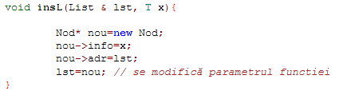
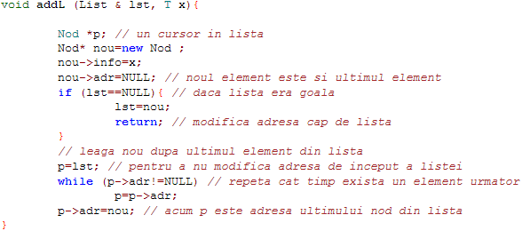

Adaugare
Adaugarea unui element la o lista înlantuita se poate face:
- Mereu la începutul listei;
- Mereu la sfârsitul listei;
- Intr-o pozitie determinata de informatia noului element.
Operatiile elementare cu liste se scriu ca functii, pentru a fi reutilizate în diferite aplicatii. Exemplu de insertie a unui element la început de lista:

Exemplu de adaugare a unui nou element la sfârsitul unei liste:
